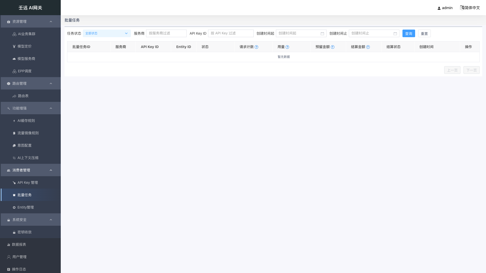

19 消费者管理：批量任务
批量任务用于管控经数据面透传创建的 provider 原生批量任务（OpenAI Batch API：/v1/files + /v1/batches）。控制台只做管控，不做创建：批量任务由调用方携带 API Key 直接向 provider 发起，数据面透传时做创建限流与金额预留 / 结算记账，控制台随后提供列表、详情、取消与文件元数据查询。
入口：侧栏「消费者管理 → 批量任务」（菜单 ID BatchTask.list，路由 /batches），位于「API Key 管理」之后、「Entity管理」之前。
页面构成：单一列表页（筛选栏 + 游标分页表格 + 底部「上一页 / 下一页」），无页签、无全局设置、无「新建」入口；点击「详情」在右侧打开抽屉（宽度 70%，5 个信息卡片 + 批量文件表格）；操作列的「取消」是本模块唯一写操作。
它解决的问题：让管理员看清每个批量任务归属哪个 API Key / Entity、进度如何（请求计数）、用了多少 token、预留与结算了多少金额，并在任务跑偏或不再需要时取消它、释放已预留的金额。
19.1 列表页

筛选栏从左到右为：任务状态（下拉）、服务商（输入框）、API Key ID（输入框）、创建时间起（日期时间选择器）、创建时间止（日期时间选择器）、「查询」、「重置」。所有条件均可选、可组合（AND 关系）。
表格列固定 12 列，末尾为「操作」列（「详情」+「取消」）。
筛选条件
| 字段 | 必填 | 默认值 | 校验规则 | 说明 |
|---|---|---|---|---|
| 任务状态 | 否 | 全部状态 | 单值，须为 status 枚举之一 | 下拉框（可清空），对应请求参数 status；选「全部状态」时请求不携带该参数 |
| 服务商 | 否 | 空 | 文本，去除首尾空格后非空才提交 | 输入框，placeholder「按服务商过滤」，对应 provider |
| API Key ID | 否 | 空 | 文本，去除首尾空格后非空才提交 | 输入框，placeholder「按 API Key 过滤」；按回车即触发查询，也可点「查询」，对应 api_key_id |
| 创建时间起 | 否 | 空 | 日期时间，格式 yyyy-MM-dd HH:mm:ss，前端换算为秒级时间戳 | 对应 start_time |
| 创建时间止 | 否 | 空 | 同上 | 对应 end_time；与起始时间同时传入时按该闭区间过滤；只填一侧时按单边过滤，不报错 |
| 每页条数 | 否 | 20 | 接口取值范围 1-200，超出截断为 200 | 前端固定 PAGE_LIMIT=20，列表页不提供「20 / 50 / 100 条/页」切换；接口未传时默认 50 |
| 分页游标 | 否 | 首页不传 | 非空字符串 | 取上一页响应的 next_cursor，不使用 page / page_size |
点击「查询」会重置回首页游标后重新请求；点击「重置」清空全部筛选条件并回到首页。
表格列
下表「字段」列即表格列名：
| 字段 | 必填 | 默认值 | 校验规则 | 说明 |
|---|---|---|---|---|
| 批量任务ID | — | — | — | batch_id，provider 侧批量任务标识；同时是详情 / 取消的路径参数 |
| 服务商 | — | — | — | provider |
| API Key ID | — | — | — | api_key_id，发起该任务的网关 API Key |
| Entity ID | — | — | — | entity_id，任务归属实体 |
| 状态 | — | — | 枚举文案映射，未知值原样展示 | status 以 Tag 展示，文案形如「进行中（in_progress）」 |
| 请求计数 | — | 0 / 0 / 0 | 缺字段时按 0 兜底 | 展示 request_counts 的总数 / 完成 / 失败，形如 100 / 98 / 2；列表头带 ? 帮助图标，提示「总数 / 完成 / 失败」 |
| 用量 | — | 0 / 0 | 缺字段时按 0 兜底 | 展示输入 / 输出 tokens，形如 50000 / 12000；表头帮助图标提示「输入 / 输出 tokens」 |
| 预留金额 | — | - | 1e-8 定点整数，原样展示，不做 ÷1e8 换算、不做格式化 | reserve_units（单位 RMB）；表头帮助图标提示「1e-8 定点整数 RMB，不做 ÷1e8 换算」 |
| 结算金额 | — | - | 同「预留金额」口径 | settle_units；未结算时为 0 |
| 结算状态 | — | — | 枚举文案映射，未知值原样展示 | settle_status 以 Tag 展示：reserved → 「已预留」、settled → 「已结算」、released → 「已释放」 |
| 创建时间 | — | - | 直接展示接口返回的 RFC3339 字符串 | created_at，不做本地时区二次格式化 |
| 操作 | — | — | — | 「详情」按钮（主色）+「取消」按钮；终态任务「取消」置灰 |
空值（null / undefined / 空串）统一显示为 -。
翻页
列表底部右侧为「上一页」「下一页」两个按钮，采用主键游标分页（非页码分页）：
- 首页「上一页」置灰不可点；
- 响应
next_cursor为空（空串）表示无更多数据，此时「下一页」置灰； - 翻页按钮只受游标影响，没有「共 X 条 / 第 Y/Z 页」的页码信息；
- 翻页过程中若有新任务写入，不会造成记录重复或漏读（游标为主键游标）。
只读视角：以「系统管理员（只读）」（
role = system_admin_readonly）登录时，本页本就没有任何写操作入口（一期不含创建，筛选栏只有「查询」「重置」），操作列的「取消」按钮被隐藏，仅保留「详情」；筛选、查询、重置、翻页等只读控件全部保留可用。该菜单项对只读角色可见（nav_tree.toml中BatchTask.list的allowed_roles含admin_readonly）。
19.2 查看详情
在列表任意一行点击「详情」，右侧弹出抽屉，标题为「批量任务详情」、宽度 70%，并请求 GET /batches/{batch_id}。抽屉内为 5 个卡片：基本信息、状态与计数、用量与记账、文件与时间、批量文件。点击右上角 X 或抽屉外的遮罩均可关闭；关闭后列表数据不变。
画面描述（本图未生成，详见 19.7 截图待补清单）：抽屉自右向左覆盖约 70% 屏宽，顶部标题栏左侧写「批量任务详情」、右侧为关闭 X；标题栏下方自上而下排列 5 个卡片——「基本信息」（批量任务ID / 服务商 / API Key ID / 产品名称 / Entity ID / 透传端点）、「状态与计数」（状态 Tag + 请求总数 / 已完成请求数 / 失败请求数 / 估算行数）、「用量与记账」（输入 / 输出 token 数、用量来源、预留金额、结算金额、结算状态、预留结余、同步来源）、「文件与时间」（输入文件ID / 输出文件ID / 创建时间 / 更新时间 / 终结时间）、「批量文件」（6 列表格，含 batch_input 与 batch_output 两行，大小列形如 1048576（1.00 MB））；抽屉背景半透明遮罩覆盖列表，列表本身不变化。
抽屉本身是纯只读的，不含任何写操作按钮；因此只读视角打开的内容与系统管理员完全一致。
基本信息
| 字段 | 必填 | 默认值 | 校验规则 | 说明 |
|---|---|---|---|---|
| 批量任务ID | — | - | — | batch_id |
| 服务商 | — | - | — | provider |
| API Key ID | — | - | — | api_key_id |
| 产品名称 | — | - | 只读 | product_name，由认证中间件按调用凭证强制注入，不接受传参；字段名旁 ? 提示「product_name，中间件强制注入，只读」 |
| Entity ID | — | - | — | entity_id |
| 透传端点 | — | - | — | endpoint，如 /v1/batches |
状态与计数
| 字段 | 必填 | 默认值 | 校验规则 | 说明 |
|---|---|---|---|---|
| 状态 | — | - | 枚举文案映射 | status，Tag 展示（见 19.4 状态与金额口径） |
| 请求总数 | — | - | — | request_counts.total；? 提示「request_counts.total」 |
| 已完成请求数 | — | - | — | request_counts.completed |
| 失败请求数 | — | - | — | request_counts.failed |
| 估算行数 | — | - | ≥ 0 | est_lines，按输入文件行数预估的请求行数 |
用量与记账
| 字段 | 必填 | 默认值 | 校验规则 | 说明 |
|---|---|---|---|---|
| 输入 token 数 | — | - | ≥ 0 | usage_input_tokens |
| 输出 token 数 | — | - | ≥ 0 | usage_output_tokens |
| 用量来源 | — | - | 枚举 download / reconcile | usage_source；? 提示「usage_source：download=输出文件下载回读 / reconcile=对账」 |
| 预留金额 | — | - | 1e-8 定点整数，原样展示不换算 | reserve_units；? 提示「reserve_units，1e-8 定点整数 RMB，不做 ÷1e8 换算」 |
| 结算金额 | — | - | 同「预留金额」 | settle_units；未结算时为 0 |
| 结算状态 | — | - | 枚举 reserved / settled / released | settle_status，Tag 展示 |
| 预留结余 | — | - | 布尔值原样展示（true / false） | over_reserved，预留金额 > 结算金额、结算后仍有剩余时为 true；? 提示「over_reserved，预留金额 > 结算金额 表示结算后仍有剩余」 |
| 同步来源 | — | - | 枚举 redis / log | sync_source；? 提示「sync_source：redis=BATCH_TASK 回源 / log=日志对账落库」 |
文件与时间
| 字段 | 必填 | 默认值 | 校验规则 | 说明 |
|---|---|---|---|---|
| 输入文件ID | — | - | — | input_file_id |
| 输出文件ID | — | - | 未完成时为空 | output_file_id；? 提示「output_file_id，未完成时为空」 |
| 创建时间 | — | - | RFC3339 | created_at |
| 更新时间 | — | - | RFC3339 | updated_at |
| 终结时间 | — | - | 未终结为空 | terminal_at；? 提示「terminal_at，未终结为空」 |
批量文件
batch_files 以表格展示；为空数组或字段缺失时显示 -。
| 字段 | 必填 | 默认值 | 校验规则 | 说明 |
|---|---|---|---|---|
| 文件ID | — | - | — | file_id，与「服务商」联合唯一定位文件（GET /batch-files/{file_id}?provider=） |
| 服务商 | — | - | — | provider |
| 用途 | — | - | provider 枚举，原样展示 | purpose，如 batch_input / batch_output |
| 文件名 | — | - | — | filename |
| 大小 | — | 0 B | ≥ 0 | bytes，展示为「原始字节（格式化）」，例如 1048576（1.00 MB）；? 提示「bytes，单位字节」 |
| 创建时间 | — | - | RFC3339 | created_at |
若任务在 job 落库前被查看（
sync_source=redis，即从BATCH_TASK回源），结算类字段可能尚未就绪，此时按空值展示为-，不视为异常。
19.3 取消批量任务
对非终态任务，在操作列点击「取消」（红色）触发二次确认。
画面描述（本图未生成，详见 19.7 截图待补清单）：屏幕中央弹出小尺寸确认弹窗，标题行左侧写「提示」、右上角为关闭 X；正文一行 16 号灰字「确认取消批量任务 {batchId}？取消将调用 provider cancel 端点并释放金额预留。」；底部右对齐并排两个按钮——主色「确定」在右、默认色「取消」在左；弹窗背后为半透明遮罩，列表本身不变化。
- 确认弹窗标题为「提示」，正文为「确认取消批量任务 {batchId}？取消将调用 provider cancel 端点并释放金额预留。」（
{batchId}替换为实际batch_id）； - 点「确定」后发起
POST /batches/{batch_id}/cancel；成功后右上角提示「取消请求已受理，任务进入 cancelling 状态」，并即时把该行状态更新为「取消中（cancelling）」、结算状态更新为「已释放（released）」（以接口返回为准，接口未返回时按此默认值兜底）； - 点「取消」（弹窗按钮）则不发起请求、任务状态不变。
终态任务不可取消：completed / expired / failed / cancelled 四种终态任务的「取消」按钮置灰不可点，悬停提示「终态任务不可取消」。
只读视角：操作列的「取消」按钮整体隐藏（终态置灰按钮也一并隐藏），仅保留「详情」；后端对
POST /batches/{batch_id}/cancel另有权限兜底，只读角色即使直接调用也会被拒绝。
取消失败的提示对照：
| 提示 | 触发场景 | 处理建议 |
|---|---|---|
| 任务已进入终态或正在被其它实例处理，取消未生效 | 接口返回 409：任务已进入终态，或另一实例正在处理（DB 条件更新抢占失败） | 刷新列表以服务端状态为准，不要按本地状态判断；若已终态则无需再取消 |
| provider 不可达，取消请求失败，请稍后重试 | 接口返回 502：控制面 → provider 出网调用失败 | 排查出网 / provider 可用性后重试；降级部署（无出网）时取消不可用，任务仅支持展示 |
| 批量任务不存在或已被清理 | 接口返回 404：任务 DB 与 Redis 均未命中，或不属于当前产品线 | 刷新列表 |
| 取消批量任务失败 | 其它未归类失败 | 记录 batch_id 后重试或联系运维 |
前置依赖：取消依赖控制面到 provider 的出网可达。无出网时该能力退化为不可用，批量任务仍可正常查看。
取消属写操作，会写入操作日志（resource_type=batch，记录操作者、目标 batch_id 与处理结果），可在「操作日志」中检索。
19.4 状态与金额口径
任务状态 status
| 取值 | 界面文案 | Tag 颜色语义 | 是否终态 |
|---|---|---|---|
validating | 校验中（validating） | 中性（default） | 否 |
queued | 排队中（queued） | 处理中（primary） | 否 |
in_progress | 进行中（in_progress） | 处理中（primary） | 否 |
finalizing | 收尾中（finalizing） | 告警（warning） | 否 |
cancelling | 取消中（cancelling） | 告警（warning） | 否 |
completed | 已完成（completed） | 成功（success） | 是 |
expired | 已过期（expired） | 中性（default） | 是 |
failed | 已失败（failed） | 异常（error） | 是 |
cancelled | 已取消（cancelled） | 中性（default） | 是 |
状态流转与 provider Batch API 对齐：validating → queued → in_progress → finalizing → completed / failed / expired / cancelled；cancelling 是取消处理中的中间态，取消真正生效后由 provider 回调 / 同步流转为 cancelled。终态集合 = completed / expired / failed / cancelled，列表页据此决定「取消」是否置灰。
结算状态 settle_status
| 取值 | 界面文案 | 含义 |
|---|---|---|
reserved | 已预留（reserved） | 已按任务规模预留金额，尚未结算 |
settled | 已结算（settled） | 已按实际用量结算 |
released | 已释放（released） | 预留金额已释放（如任务取消） |
金额口径（重要）
reserve_units / settle_units 是 1e-8 定点整数，单位为 RMB（1 单位 = 0.00000001 元），口径与 RMB 配额、报表链路一致。界面原样展示整数，不做 ÷1e8 换算、也不做小数格式化：接口返回 250000000 就显示 250000000，请自行换算后再向业务方解释金额。
其它枚举
| 字段 | 取值 | 含义 |
|---|---|---|
usage_source | download | 用量经输出文件下载回读获得 |
usage_source | reconcile | 用量经对账获得 |
sync_source | redis | 该记录由 Redis BATCH_TASK 回源（job 落库前的窗口期，结算类字段可能未就绪） |
sync_source | log | 该记录由日志对账落库 |
19.5 权限与审计
| 项目 | 说明 |
|---|---|
| 权限 Feature | FeatureBatch（批量任务功能开关），列表 / 详情 / 文件元数据查询共用 |
| Action（读） | ActionRead，用于列表、详情、批量文件元数据查询 |
| Action（写） | ActionCancel，仅用于取消；记录操作日志 |
| 产品线隔离 | product_name 由认证中间件强制注入，请求中携带一律忽略；只能看到本产品线数据 |
| 操作日志 | 取消任务写入操作日志，resource_type=batch |
接口错误码对照：
| 错误码 | 场景 | 页面表现 |
|---|---|---|
| 401 | 未认证 / 凭证失效 | 由请求拦截器统一提示，页面不再重复提示 |
| 402 | 无 FeatureBatch 读（或取消）权限 | 同上；列表数据清空 |
| 422 | 列表参数非法（status / limit / 时间区间） | 同上；列表数据清空 |
| 404 | 任务 DB 与 Redis 均未命中，或不属于当前产品线 | 详情：提示「批量任务不存在或已被清理」；取消：提示同文案 |
| 409 | 取消时任务已终态或他实例处理中 | 提示「任务已进入终态或正在被其它实例处理，取消未生效」 |
| 502 | 取消时 provider 不可达（出网失败） | 提示「provider 不可达，取消请求失败，请稍后重试」 |
19.6 注意事项
- 页面上没有「新建」入口是设计如此。批量任务只能由调用方携带 API Key 向 provider 的
/v1/batches发起、经数据面透传创建；控制台一期只做管控。找不到「创建」按钮时不要当作缺陷。 - 金额是 1e-8 定点整数，界面不换算。列表和详情中的预留 / 结算金额都是原始整数（如
250000000= 2.5 元），与「配额」「报表」的口径一致；任何除以 1e8 的换算都由使用者在外部完成。 - 预留结余（
over_reserved）不是余额。它只表示「预留金额 > 结算金额、结算后仍有剩余」这个布尔判断；false也可能是未结算（settle_status=reserved），要结合结算状态一起看。 - 回源记录（
sync_source=redis）字段可能未就绪。这类任务是从 Redis 回源的、job 尚未落库，结算类字段（settle_units/settle_status/terminal_at）可能为空，界面显示-属正常，稍后再看即可。 - 取消不保证立即终结。取消成功后任务进入
cancelling，要等 provider 侧真正取消后才流转为cancelled；409 表示「任务已终态或正被其它实例处理」，此时以刷新后的服务端状态为准，不要按本地状态判断。 - 取消依赖控制面出网。无出网的降级部署中，取消会返回 502、该能力不可用，但列表与详情查看不受影响。
- 列表筛选与接口参数不完全等价：接口支持按
entity_id过滤，但控制台列表未提供 Entity ID 筛选框（仅提供状态、服务商、API Key ID、创建时间起止）；列表中展示的 Entity ID 只用于查看。 - 分页每页 20 条且不可切换，且没有页码与总条数；只能按游标「上一页 / 下一页」浏览。若已翻到第 N 页，再点「查询」或「重置」会回到第一页。
19.7 截图待补清单
本章截图由
ai-gateway-web-test/scripts/capture-docs-new-modules.js生成。 批量任务由数据面透传创建、控制台无创建入口，截取环境（本机控制台）GET /batches返回空列表， 因此列表相关的两张只能拍到空态，详情与取消确认两张无法拍摄（需要真实任务行才能打开抽屉 / 点「取消」）。
images/19-batch-tasks-list.png— 批量任务列表页。已生成，但为空态：筛选栏（任务状态 / 服务商 / API Key ID / 创建时间起止 + 查询 / 重置）、12 列表头（含请求计数与用量的?帮助图标）、底部「上一页 / 下一页」完整可见；因环境无任务数据，表格显示「暂无数据」，未能体现状态与结算状态 Tag、非零金额、非终态 / 终态两种行。images/19-batch-tasks-detail.png— 批量任务详情抽屉：标题「批量任务详情」、宽度 70%，5 个卡片（基本信息 / 状态与计数 / 用量与记账 / 文件与时间 / 批量文件）完整可见，batch_files表格含batch_input与batch_output两行、大小列显示「原始字节（格式化）」。未生成：环境中没有任务行，「详情」按钮无对象可点。images/19-batch-tasks-cancel-confirm.png— 取消二次确认弹窗：标题「提示」，正文「确认取消批量任务 <batch_id>？取消将调用 provider cancel 端点并释放金额预留。」，可见「确定 / 取消」按钮。未生成：环境中没有任务行，「取消」按钮无对象可点。images/19-batch-tasks-readonly.png— 只读管理员视角的列表页：以role = system_admin_readonly登录，操作列只有「详情」、无「取消」（含终态行），筛选栏与翻页按钮均正常可见。已生成，但为空态：已用只读账号viewer登录拍摄，筛选栏与翻页按钮正常，同样因无任务数据不显示任何行，未能体现操作列「详情 / 取消」的差异。
建议对照图：终态任务「取消」按钮置灰并悬停显示「终态任务不可取消」的局部特写；如需单列，可另存为
images/19-batch-tasks-cancel-disabled.png。未生成（同上：无任务数据）。